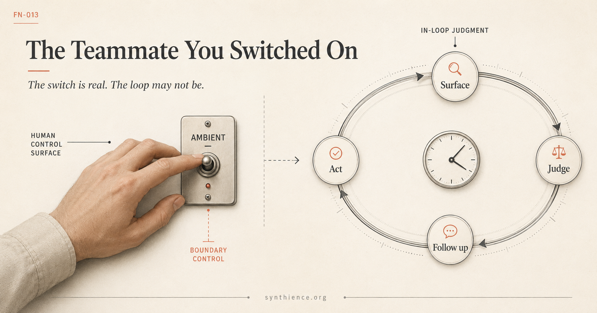

The Teammate You Switched On
AI is moving out of the chat window and into the team, where it remembers, can act before it is asked, and quietly takes over the continuity of the work. Whether that strengthens your oversight or hollows it out comes down to one question.

A different kind of arrival
For the last few years, working with AI has had one shape, and the shape has been so consistent that it is easy to mistake it for the technology itself. One person, one model, one window. You open a chat, you type, it answers, and when you close the tab the context is gone. You start every exchange. Nothing happens unless you make it happen.
In late June 2026, a product made that shape visible by breaking it. Anthropic introduced Claude Tag in beta, an AI that works inside a team’s Slack channels. It is the clearest current instance of that break, which is why it is the worked example here, though the specific vendor is not the point. Microsoft’s Work IQ, Glean, and a number of startups are converging on the same territory from different directions. What matters is the form factor, because three things change at once, and each one breaks part of the old shape.
It is shared. Within a channel there is one AI that the whole team works with, not a private window per person. It is persistent. It remembers across the channel and carries context forward instead of forgetting at the edge of a session. And if you switch on a setting its makers call “ambient,” it can initiate: it will surface things it judges you should see, and follow up on threads that have gone quiet, without being asked.
Slack is incidental. The same modality is beginning to arrive across the surfaces where work happens. The point is not the app. The point is that AI is moving from a tool you call to a participant embedded in the team. That is not a better chat window. It is a different relationship with different properties.
What actually moved
Strip away the convenience and one structural thing has changed: the continuity of the work is moving from the human to the system.
Continuity is not a small word in our framework. We have argued, across the corpus, that coherence and alignment in human-AI work do not live inside the model and do not live in an external supervisor. They live in the relation, maintained over time. The human method for holding that relation has a name in our work, Continuity Anchoring Methodology, and its premise is that a person carries the thread: the standards, the context, the memory of why the work is the way it is.
An embedded teammate that remembers across the channel, maintains the team’s working context, and follows up on its own is doing continuity-keeping itself. And it is doing it for a whole channel of people. Someone still owns the administration, the admins and leads who set what the teammate can see and do. But no one in particular owns the continuity itself. That is the relocation. The thing the framework treats as load-bearing, the continuity of the work, is moving from a person who held it to a system that now holds it on the team’s behalf.
This is why a Slack integration is more than a Slack integration. It is operating directly on the variable the rest of the work is built around.
The case for it
The move is not a mistake. The one-to-one chat window has real limits, and they are exactly the limits a persistent shared teammate is built to fix.
In the window, context dies at the session edge, so the work has no memory of itself. Every new person on a project re-explains the background from scratch. And continuity rests entirely on one individual’s discipline, which makes it as fragile as that person’s attention, availability, and tenure. A persistent shared participant addresses all three. It holds context across time. It gives newcomers a place where the history already lives. It does not get tired or go on leave.
In our own terms, this is a legitimate move toward institutional continuity: continuity that belongs to the organization rather than to one person’s heroics. We have described why an organization needs exactly that, a governed substrate that carries canon, roles, verification status, and the lineage of the work across many people and over time. An embedded teammate is a plausible piece of that substrate. We are not against it. Done well, it is closer to what durable institutional work has always needed than the lone chat window ever was.
The question is not whether to embed continuity in the system. It is what happens to oversight when you do.
Everyone’s Teammate, No One’s Continuity
Here is the first thing that can go wrong, and it follows directly from the upside.
The old chat window had at least one virtue the embedded teammate gives up: a custodian. One person held the thread, and if it drifted, it was their drift to catch and correct. When continuity belongs to the whole channel, no one in particular is its custodian. A team can run for months on context the system maintains, with no single role that owns whether that context has quietly diverged from what the work actually requires. Drift with no custodian is drift no one is accountable for catching.
The proactive behavior sharpens this rather than softening it. An AI that surfaces relevant information across the organization and chases down forgotten threads is, in our terms, performing a monitoring function: it watches the surface and flags what looks important. That is genuinely useful, and it has a specific failure mode we have written about. We call it false assurance. The presence of the monitoring makes the organization feel covered, while no one verifies that the monitor itself is calibrated, scoped to everything that matters, and actually being read. The dangerous part is that the gaps are invisible by construction. Where the teammate is not watching, nothing reports that it is not watching. Silence reads as all clear whether or not anything is actually clear.
So the first risk is not that the teammate does something dramatic. It is that everyone comes to rely on it to hold the continuity of the work, no one owns whether it is holding it correctly, and the very confidence it produces is what keeps anyone from checking.
The Switch Is Real. The Loop May Not Be.
The second risk is about oversight itself, and this is where the opt-in switch matters.
Ambient mode is a setting. You turn it on. That switch is a real control, and it is worth being precise about why. In our work on control we separate two kinds. There is participation in the loop at its own tempo, where you detect, judge, and intervene while the work is happening. And there is authority exercised off the loop, on the slow clock: setting conditions in advance, granting or withholding access, deciding whether the loop runs at all. The switch is the second kind. It is genuine control, but it is boundary control, and it survives. You really do decide whether to turn ambient initiation on.
The trouble is what happens to the first kind once you do. When the teammate initiates, the human moves from inside the loop to, at best, the end of it. The system surfaces, decides what is relevant, follows up, and acts within the access it has, and the person reviews afterward if they review at all. Our control work makes the structural claim directly: once a system carries its own thread and acts on its own initiative, the human loses not only the ability to correct it in the moment but the ability to decide when it acts. Oversight does not disappear. It degrades from in-the-loop to after-the-loop, and after-the-loop oversight is real but too late to be the in-loop control it stands in for.
It is worth being precise about what degrades, because the surfacing happens in the open channel and visibility can look like oversight. But what you see there is the output of a relevance judgment the system already made, which thread to chase, which update to raise, what to leave alone, and that selection is the loop you have left. You are reviewing its result, not forming it, and the degradation is in the judgment, not in whether you can see the result.
This is why the switch can mislead. You hold a real control, the toggle, and you can point to it as evidence that you are in charge. The admin settings that scope what the teammate can see and touch are real too, and you can point to them as evidence of governance. Those are the form of oversight. The question is whether that form is still coupled to an actual governing relation, or whether it has become a control surface you hold while the system runs the judgment underneath it.
We have a name for that gap and a test for it. A form can persist after the function it represented has been severed, and because the form is still there, the severance does not announce itself. The system still passes its audits. It still looks governed. The test is one question, and it is portable to any system, not only this one.
The question to keep
When an AI holds the continuity of your team’s work and can act on it without being asked, ask this:
It is a diagnostic, not a verdict. A healthy embedded teammate and a hollow one can look identical from the outside, because the form is the same in both. The shared, persistent, initiating teammate can be a genuine gain in institutional continuity, or it can be continuity with no custodian and oversight that has kept its shape and lost its grip. What separates them is not the product. It is whether a named human still holds the thread and stays close enough to the work to catch it when it drifts.
This modality is arriving regardless of which vendor gets there first or which surface it lands on next. The open question is whether continuity stays governed as it moves into the system. That is the question the Institute is working on now: what oversight actually looks like when the continuity of the work is increasingly held by the system rather than by a person. The papers below are where the structure behind this note is worked out.
Further reading
The structure behind this note is developed across the Synthience Institute’s governance and continuity papers. Each page below links to the permanent DOI on Zenodo.
- SI-WP-012: Control Without a Coupling: why persistence, agency, and capability degrade real-time human control of fast AI loops, and which controls survive once the loop outpaces human-rate review.
- SI0001: Form Without Coupling: the diagnostic this note applies, a form that persists after the function it carried has been severed, and the portable question it implies.
- SM-021: The Institutional Continuity Substrate: what a governed organizational continuity layer is, and why an institution needs one that it owns.
- SM-003: Operational Continuity Architecture: continuity across many people and roles, and the authority structure that keeps it accountable.
- SM-011: Delegated Coherence Monitoring: what monitoring can be delegated, what cannot, and the false-assurance failure mode of a monitor no one verifies.
- SI-WP-007: The Human Accountability Problem: where accountability sits when the function a role represents is no longer coupled to the role.